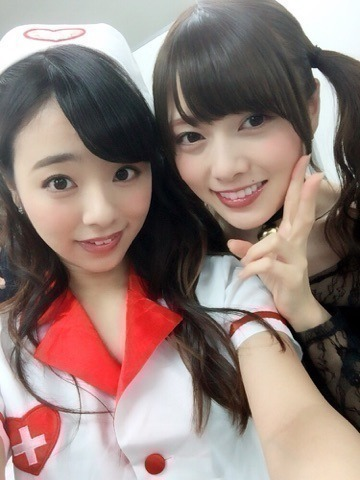
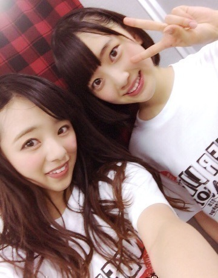
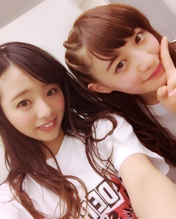
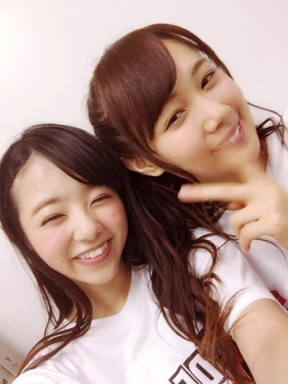
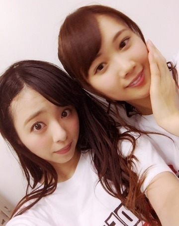

お疲れ様です♡.＊
川村まひろです.＊

先ずは皆さん,
「4thシーズンアンダーライブ」
お疲れ様でした。そして本当にありがとうございました♡♡♡（ ｉ _ ｉ ）
今回,アンダラ中に感じたこと。。
『なんだろう... 何か今までと違う楽しさというか充実感があって、皆成長している...。』
前回のライブはノンストップライブ。
個人的にはこのノンストップライブが私は大好きでした。
「でも今回はMCを沢山する。それに台本は何も作らない、自分たちの話したい事を話して、自由にフリートークして」との事でした。
最初,私達は戸惑いもありました。。
でも、いざアンダラが始まってMCをして思いました。 『決められたことを話すより、自分たちの話で自分たちらしくトークするってこんなに楽しいんだ‼︎』と。
私は,「ひめか,あやね,みおな,私」という、何だか他のグループよりまったりとした4人が集まったグループでした．なのでとりあえず決め事としては、「うちら4人は面白いこととか言おうとしなくていい。いつも通り、まったりとトークしましょ♡」と。
今回のライブは、何だか本当に本当に勉強になったと思います♡
やって良かった。と素直に思えます。ノ
みおな

かな

はい、そして今回のポイントもう１つ‼︎
『表題曲をしない』
これも私達にとって挑戦的な事でした.＊
アンコールでは12thという事で「太陽ノック」だけ披露したんですけどね 笑、
らりん！！！！
今回もありがとう*\(^o^)/*
やっぱりらりんが居ると安心します。
お互い苦手な所は支え合い,これからも一緒に乗り切って行こうね♡
だいすき.＊

♡

ラストに...
皆さーん．私の個人PV見て頂けましたか♡？ 何だか,わりと今までの中でも評判がいいみたいで嬉しいんですよね...。えへ
北野に, 最初のベッドに顔うずめて「デートしたいぃ、デートしたいぃぃ」ってシーンが本当に可愛いです。って言われたよ(#^.^#)
何だか,標準語と関西弁がいり混じってる感じが本当に普段の私で,リアル感がある...♡笑
ちなみに私も北野のPVは見ていたので、その後2人で北野のPVのまねをして遊びました。
ぁ！そーそーそれと♡
私のPVで流れてる歌、、、
あれまひろの歌声です。ノ
ちゃんと分かってたかな？？ぇへへ
という事で,また更新するね♡
お疲れ様でしたーノ
ばいばぁい．